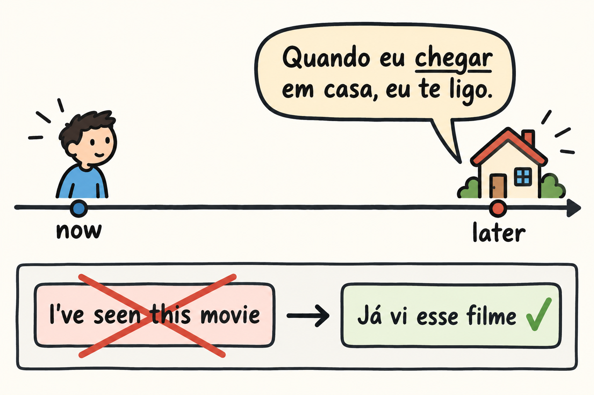

Your English has already made a set of decisions for you, and every one of them becomes a trap in Portuguese. English has one copula where Portuguese has two. It lets the present tense carry future reference. It offers a present perfect that Portuguese usually answers with a simple past. It wants its objects spelled out. It gives you no grammatical gender on the nouns you use every day, and it hands you its own prepositions wherever you go.
The objective of this chapter is to fix the contrasts that English creates, the copula, the subjunctive future, the present perfect and object position, and then the noun-level traps, gender and regência. This is a contrastive chapter rather than a full grammar. For each point you get the decision that English pushes you to make wrongly and the shape of the Portuguese answer.
English uses "be" for identity, for state, for location and for a good deal more. Portuguese splits that work between ser and estar. The popular shortcut says that ser is for what is permanent and estar for what is temporary. That rule fails, and it fails on locative sentences [F57]. The same source notes that ser and estar are hard for speakers of languages with a single copula in the first place [F57], so the difficulty is not a sign that you are doing something unusual.
An approach that treats the choice as a matter of probability in context, instead of a single rule, has been tested with American students [F58]. The practical version of that idea is the author's suggestion: learn ser and estar with the kind of sentence they appear in, and keep a small notebook of the sentences that surprised you, instead of hunting for a rule that will cover everything.
Here are the author's illustrations, showing where the permanent and temporary shortcut breaks:
One more warning, offered by analogy only. In a study of English speakers learning Spanish as a second language, ser is overgeneralized and estar omitted [F59]. That result comes from Spanish L2, so treat it as an analogy for what English speakers may do in a second Romance language, and not as evidence about English speakers learning Portuguese.
English uses the present tense after "when" and "if" in many future sentences: "When I get home, I will call you." Portuguese uses the subjunctive future in that same spot, where English uses the present [F60]. The form is not exotic book language. It is the ordinary way to say what will happen when something else happens.
Author's illustrations:
The habit to build is simple, and it is the author's suggestion: as soon as a future sentence opens with quando or se, check that the verb that follows is not the present indicative. Be patient with this area in general. Mood is difficult for second-language learners [F61], so this is a spot where repeated retrieval practice earns more than reading the rule again.

The English present perfect is one of the transfers to watch in this book. Native English speakers transfer it into Portuguese at all levels [F71], which means it does not disappear as you advance.
The author's illustration: "I've seen this movie" against "Já vi esse filme". English builds the sentence with "have" plus a past participle and points at a past event with present relevance. Portuguese here answers with a simple past, with já, "already", placed before the verb. That illustration is the author's own.
As the author's suggestion, when you feel the English "I have already done it" rising, reach for já plus the simple past instead of building a perfect. Write the sentence down in the form you actually said, then in the Portuguese form, and let the pair sit in your error deck for later review.
English repeats the object. "I saw it", "I know her", "We need them". Portuguese can leave the object out, and the research on English-speaking learners reports both directions: transfer of the expressed object and overgeneralization of the omitted one [F63]. The trap is real both ways, so the goal is not to delete every object but to know when Portuguese wants one.
The object pronoun itself is in motion. According to the abstract of a study based on a written corpus, the clitic o/a is in disuse in speech and persists in writing, with ele/ela or the null object in its place [F64]. So the grammar book's o/a forms are forms you will read more often than you will hear.
Word order completes the picture. Initial proclisis is common in Brazilian Portuguese speech [F65], meaning the object pronoun can stand before the verb at the start of a sentence. Author's illustration: "Me ajuda aqui?" for "Can you help me here?", with the pronoun before the verb. In listening practice, expect that order.
Brazilian Portuguese shows loss of the referential null subject and filling of the pronominal subject, above all in the first and second persons [F15]. In practice, hearing "eu" and "você" more often than a textbook ending-only picture would lead you to expect is normal.
Meanwhile the pronoun for "we" is shifting. A gente is replacing nós [F67] and competes with it in complement functions [F66]. Author's illustrations: "A gente vai amanhã." for "We are going tomorrow." and "Nós vamos amanhã." as the more conservative option. A gente is worth learning as a unit, and the verb that follows it takes the third-person singular shape.
Regional tu adds one more layer. The choice between tu and você varies, and tu can appear with a third-person verb form, as in "tu vai" [F68]. Treat that as a pattern you should recognize in speech, and as the author's suggestion, choose the pronoun habit of the region you are in rather than mixing them in one conversation.
English gives you no warning here. Gender errors in learners mix transfer and overgeneralization, and English L1 appears among the groups studied [F69]. In Spanish L2 the error has been described as one of lexical assignment, not a syntactic deficit [F70]. As the author's reading, this suggests the learner who says the wrong article may simply have stored the word without its gender.
If gender is a property of the stored word, the fix is storage. Learn every noun with its article, and drill the pair as one item. Author's illustrations: "o dia", "a noite", "o problema". When you add a new noun to your notebook, the entry is never just the noun. It is the noun with the article in front of it.
English opens existential sentences with an empty "there": "There is a bank near here." Existential ter predominates over haver in Brazilian Portuguese, and haver is favored in the past [F72].
Author's illustrations:
For everyday speech, ter is the form to reach for in the present, and haver is the form to recognize in the past [F72].
Many Portuguese verbs come with their own preposition, and it is not always the one English would pick. As the author's suggestion, learn the verb with its preposition as a block rather than translating preposition by preposition. Prepositions of regência are documented as a source of English-Portuguese interference [F73]. The limitation matters here: the cited literature mostly covers Portuguese speakers learning English, and studies of English speakers learning Portuguese are lacking [F73]. What you can take is the warning, not a measured error profile for your own case.
Author's illustrations: "gostar de música" for "to like music", "precisar de ajuda" for "to need help", and "morar em São Paulo" for "to live in São Paulo". When a new verb arrives in your notebook, write the preposition beside it the same day.
What follows are the author's suggestions. They carry no source claim and no figures. Each one is a habit that many learners find useful, not a research result.
Grammar here is a set of decisions, not a set of tables. Work through the contrasts in the order of this chapter, keep every example you write in your own error deck, and let the articles, the prepositions and the pronouns travel with the words they belong to.
Spanish is both support and trap. English-Spanish bilinguals depend on Spanish when learning Portuguese, whatever the order in which they acquired their languages [F62]. That dependence is not a defect. It is material to manage, and the grammar traps below are places where it can mislead you.
The three traps most relevant to this chapter are the author's suggestions, not sourced claims.
Now the sound drill, because grammar and sound meet when you speak. English-Spanish bilinguals produce voiced stops as Spanish-style approximants [F36], so b, d and g can come out soft and continuous instead of closed. In Portuguese, produce them as real stops, with a complete closure and a clean release, especially between vowels. Say these author's illustrations slowly and keep the consonant hard:
Put each word into a short phrase of your own, then say it again at conversational speed without letting the consonant soften. The dependence described above [F62] is the reason this drill is not optional polish.
Retrieving what you just read is what makes it stick: a meta-analysis of the testing effect compares testing with restudy [F94]. Answer from memory first, then check the key.
Checking against the text is part of the work, not a failure [F94].
As the author's suggestion, here is a simple calendar for this chapter. Read it once today, then come back on these days:
On each return, run the self-test from memory before you reread anything, then reread only the parts you missed. These review points are the author's adaptation of the interval idea in a spacing study [F90], which measured a single gap between two study sessions. That source did not test this calendar, and the points above are a suggestion, not a result reported by that study. Adjust the timing to your own week if you need to; the habit of returning and retrieving matters more than the exact day.